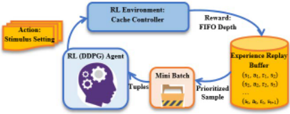
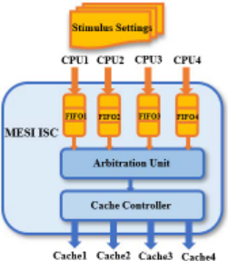
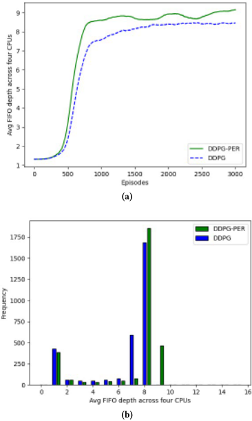
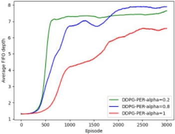
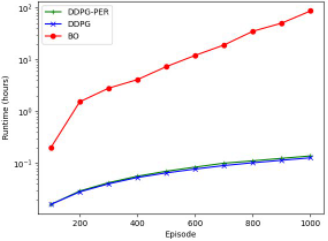

利用先进强化学习算法优化设计验证
论文针对仿真式功能验证中 hard-to-hit 状态难以覆盖的问题，选取四核 MESI cache controller（ISC）作为验证对象：其输入 FIFO 仅在 CPU 事务地址冲突时才被填充，随机激励下 FIFO 占用极低，深 FIFO 状态因此难以到达。作者提出将 DDPG 与 Prioritized Experience Replay 结合的 DDPG-PER 强化学习激励生成框架：每个 CPU 有 5 个指令控制与 3 个地址控制 knob，构成 32 维动作向量，并通过将 tag/index/offset 地址分块把大连续动作空间离散化，以四 CPU 平均 FIFO 深度作为奖励。实验基于开源 Verilog RTL 与 Verilator 仿真器完成 3000 episodes 训练。结果表明 DDPG-PER 比均匀 replay 的 DDPG 更快达到更高平均 FIFO 深度并显著提高深 FIFO 出现频率；与 Bayesian Optimization 基线相比，DDPG-PER 与 DDPG 取得更大平均 FIFO 深度且执行时间显著更短。
随着 IC 复杂度增长，仿真式功能验证难以覆盖设计中的 hard-to-hit 状态。论文聚焦 MESI cache controller（ISC）：其输入 FIFO 仅在 incoming CPU 事务发生地址冲突时才被分配和填充，而随机地址的随机事务流几乎不会触发冲突，导致 FIFO 占用极低、深 FIFO 状态无法到达。目标是利用 RL 智能生成激励/knob 设置，以显著更少的仿真周期达到最优验证覆盖。
将激励生成建模为单状态 multi-arm bandit（MDP 中状态为常量）：动作向量为 32 维，对应每 CPU 8 个 knob（5 个指令控制百分比 [0,100]、3 个存储地址控制 [0,7]）；通过将 tag/index/offset 地址分块，把大连续动作空间替换为较小的离散动作空间；奖励定义为四 CPU 平均 FIFO 深度（每个 FIFO 最多 16 项）。算法上采用 DDPG（actor-critic 深度网络 + experience replay），并引入基于 TD-error 优先级与 importance-sampling 权重的 Prioritized Experience Replay（PER）加速学习；以 Bayesian Optimization（GP prior + GP-Hedge 采集函数）作为基线。DUT 为开源 Verilog 的四核 MESI ISC RTL，使用 Verilator 仿真，训练 3000 episodes（PER 参数 α=0.5、β=0.5，minibatch 128，另做 α 敏感性实验），实验在无 GPU 的 Intel Xeon E5-2686 v4 CPU 实例上进行。
DDPG-PER 比采用 uniform experience replay 的 DDPG 在更少 episodes 内达到更高的平均 FIFO 深度奖励（共 3000 episodes，取前 100 次奖励的滑动平均；具体数值见图 3a，正文未给出绝对数字）
DDPG-PER 生成的激励使高 FIFO 深度的出现频率明显增加（图 3b 直方图分布）
α 敏感性实验：α=0.8（β=0.5）时平均 FIFO 深度最大，优于 α=0.2 与 α=1，表明仅以 TD-error 作为优先级准则在该环境中并不充分
运行时间对比：DDPG-PER 执行速度显著快于 BO（GP 推断随数据点立方增长，且每个 episode 需优化 GP-Hedge 采集函数）；DDPG-PER 因元组优先级排序略慢于 DDPG
在 1000 episodes 的评估中（表 1），DDPG-PER 与 DDPG 的四 CPU 平均 FIFO 深度均高于 BO，推测原因是 BO 在很高维输入上效率较低；正文未给出具体数值
相对已有 ML 验证工作（LSTM/随机森林、三层 ANN 做coverage-directed test generation、聚类筛选测试、SVM/Sigmoid 神经网络、K-NN policy gradient、RL+RNN 等），本文的贡献是将 DDPG 与 PER 结合用于 DV 激励优化：通过地址分块把大连续动作空间离散化，用单状态 multi-arm bandit 简化 MDP 建模，并以平均 FIFO 深度为奖励直接优化难命中状态的触发；同时给出了与 Bayesian Optimization 基线在覆盖效果与运行时间上的系统对比。
相关度级别：high
命中能力域：2.4 设计验证方法学 | 2.7 EDA/验证自动化与 AI 辅助
理由：论文直接命中 2.4：其核心是仿真式功能验证中的 coverage-directed 激励生成与 hard-to-hit 状态覆盖，这正是验证方法学的核心技术场景；同时命中 2.7：用 RL 自动化激励/knob 搜索属于 AI 辅助验证自动化。其 DUT 为四核 MESI cache coherence controller，包含地址冲突仲裁、FIFO 深队列等机制，与团队高速互连/存储 IP 验证中常见的冲突、重试、深队列类难命中场景同构，方法具备向团队验证环境迁移的潜力。
建议动作：深入精读并做内部分享
鉴于集成电路复杂度的不断提升，在基于仿真的硬件设计验证（DV）中应用机器学习已成为确保全面覆盖难以命中状态的关键手段。本文提出一种将深度确定性策略梯度（DDPG）算法与优先经验回放（PER）相结合的方法，用于确定在改进型独占共享无效（MESI）缓存控制器架构中能够产生最高平均 FIFO 深度的激励设置。该架构包含四个 FIFO，每个 FIFO 对应一个不同的 CPU。通过大量实验证明，在提升 DV 过程中的平均 FIFO 深度和覆盖率方面，结合 PER 的 DDPG（DDPG-PER）比采用均匀经验回放的 DDPG 更为有效。此外，我们提出的 DDPG-PER 框架显著提高了较高 FIFO 深度出现的频率，从而解决了 DV 中难以到达难以命中状态的挑战。所提出的 DDPG-PER 和 DDPG 算法在四个 CPU 上也展现出更大的平均 FIFO 深度，且所需执行时间远少于贝叶斯优化（BO）。
深度强化学习、硬件设计验证、深度确定性策略梯度（DDPG）、优先经验回放（PER）、功能覆盖率、激励生成
Zahra Aref, Rohit Suvarna, Bill Hughes, Sandeep Srinivasan, and Narayan B. Mandayam. 2024. 用于优化设计验证的先进强化学习算法. 载于第61届 ACM/IEEE 设计自动化会议（DAC '24），2024年6月23日至27日，美国加利福尼亚州旧金山. ACM，美国纽约州纽约，共6页. https://doi.org/10.1145/3649329.3657365
在高性能需求和多样化需求的驱动下，计算机系统的复杂性日益增加，带来了显著的
特此允许免费制作本作品部分或全部内容的数字或硬拷贝以供个人或课堂使用，前提是这些拷贝并非为营利或商业利益而制作或分发，且拷贝在首页带有本声明和完整的引用信息。本作品中第三方组件的版权必须得到尊重。对于所有其他用途，请联系所有者/作者。
© 2024 版权由所有者/作者持有。
ACM ISBN 979-8-4007-0601-1/24/06.
本文其余部分的结构如下。第2节对相关工作进行了讨论，第3节介绍了基于仿真的设计验证。第4节详细描述了所提出的模型。第5节给出实验结果，随后第6节给出结论与未来工作。
设计验证，或称功能验证，是硬件设计中用于证明设计功能正确性的一种技术。尽管它是最昂贵的流程之一，但通常也是效率改进最受关注的环节。在功能验证中，主要目标是确保设计实现满足规格要求且不包含任何缺陷（bug）。具体而言，当硬件描述语言（HDL）无法表示所需功能，或硬件设计者未能发现难以命中的状态时，识别这些缺陷便是硬件验证工程师的职责。
功能验证主要通过形式化技术和基于仿真的技术来执行。形式化验证通过穷举探索状态空间，利用数学方法证明或证伪设计规格的正确性。随着设计中触发器数量的增加，状态空间也会呈指数级增长。另一方面，基于仿真的验证凭借其可扩展性和易用性，在工业制造中仍得到广泛应用。然而，它需要大量的时间、人力以及大量的测试向量，但仍不足以保证设计深层状态的正确行为。在基于仿真的验证中，首先生成输入向量（或称旋钮设置），然后根据输入向量确定输出 [2]。
覆盖率导向的测试生成是现代验证的主要方法。使用随机激励生成器生成大量测试用例，并将覆盖率作为主要度量指标，使验证团队能够判断所有关注的场景是否都已被测试。这需要对被测设计（DUT）有深入的理解，并具备为测试生成器提供指令方面的专业知识。对于每个覆盖率场景，约束驱动引擎会为测试生成器提供一组指令，以针对每个覆盖率事件最大化命中这些状态的概率 [10]。
强化学习（RL）可作为一种有效的方法来生成精确的激励，从而提升设计覆盖率。一组约束可作为特征，而关于期望条件达成程度的信息则可作为待优化的奖励。

在本文中，我们提出了一种激励生成优化模型，该模型在功能验证环境中采用深度确定性策略梯度（deep deterministic policy gradient）强化学习算法，并结合优先经验回放（prioritized experience replay）。我们的研究聚焦于被测设计（DUT），即多处理器 MESI ISC 的开源 Verilog RTL。所提出的模型如图 1 所示。
MESI 缓存控制器在确保本地缓存与存储器中缓存数据的一致性方面发挥着重要作用。MESI ISC 设计基于 MESI 协议 [13]，该协议在采用写回策略、具有多核与本地缓存的系统中维护缓存一致性。图 2 展示了具有四核一致性配置的 MESI ISC，其中每个核代表一个处理器。如今，四核配置已被视为十分常见。在这种配置中，每个 CPU 都配备有自己的先进先出（FIFO）队列，最多可容纳 16 个事务。传入的 CPU 事务会先经过一个仲裁单元，然后才被导向各自的缓存。该仲裁单元负责判定哪些访问可以继续前往缓存，哪些访问需要暂时停顿以等待后续处理。为了解决加载与存储操作之间的冲突，采用了与四个 CPU 端口相关联的四个 FIFO。当两个 CPU 同时尝试访问同一地址时，优先级较高的 CPU 将获得访问权，而优先级较低的 CPU 则将相应事务插入其 FIFO 中，留待后续处理。因此，深度较大的 FIFO 被视为难以命中的状态，因为只有地址冲突才会导致队列深度增加。选择 MESI ISC 架构作为概念验证，是因为输入 FIFO 仅在传入事务发生地址冲突的情况下才会被分配，而在地址随机的随机事务流中，这种情况相对少见。此外，当事务因地址不匹配而被载入时，它通常只会在 FIFO 中停留很短时间，随后便被写入存储器。因而，在存在地址随机的随机输入事务流的情况下，FIFO 的占用率预计会非常低。
当 FIFO 队列达到其容量并被填满时，设计中先前处于非活动状态的组件将被激活。这使得能够检测到可能出现在 MESI 缓存控制器设计深层状态中的缺陷。因此，最大化 FIFO 深度在识别那些通过传统测试方法难以发现的隐蔽缺陷方面可能很有价值。为确保缓存控制器的功能正确性，为每个 CPU 端口提出了一个专用的设计验证（DV）环境。CPU 事务被适当地加权，并且事务的存储器地址根据目标缓存的标签（tag）、索引（index）和偏移（offset）地址进行约束。
强化学习（RL）是指训练一个智能体（agent）来确定在与环境交互时能够使累积奖励最大化的最优动作。智能体的行为被建模为马尔可夫决策过程（Markov decision process），其中策略 𝜋 将状态映射为动作上的概率分布：𝜋 : 𝑆 → 𝑃 ( 𝐴 ) 。在具有离散回合（episode）的完全可观测环境中，RL 模型由状态空间 𝑆 、动作空间 𝐴 = R 𝑁 、转移概率 𝑝 ( 𝑠 𝑡 + 1 | 𝑠 𝑡 , 𝑎 𝑡 ) 以及每个回合 𝑡 中的奖励函数 𝑟 𝑡 ( 𝑠 𝑡 , 𝑎 𝑡 ) 来表征。

为了对强化学习问题进行建模，我们采用了一种具有单一状态的多臂老虎机（multiarm bandit）方案 [18]，其中状态由常整数值 𝑠 𝑡 = 1 表示，初始状态为 𝑠 0 = 0。
动作向量 𝑎 𝑡 表示回合 𝑡 中的 DV 激励设置，其大小为 32，代表每个 CPU 有八个旋钮（knob）。每个 CPU 有五个旋钮对应指令控制，三个旋钮与存储器地址控制设置相关。我们设计中所给出的 DV 激励设置的完整列表如下所示。
动作向量 𝑎 𝑡 定义如下：
其中，𝜌 𝑖 𝑗 和 𝜎 𝑖𝑘 分别表示 CPU 𝑖 的指令控制和存储器地址控制设置。CPU 的指令控制由 [ 0 , 100 ] 范围内的一个整数指定，该整数表示所执行命令的百分比。此外，存储器地址控制设置中的每个字段被定义为 [ 0 , 7 ] 范围内的一个整数，用于指示存储器地址范围。
在我们提出的模型中，奖励 𝑟 𝑡 被定义为回合 𝑡 中四个 CPU 的平均 FIFO 深度。MESI 缓存控制器具有四个 FIFO 队列，每个 CPU 对应一个队列。每个 FIFO 队列最多可存储 16 个表项。其目标是最大化每个 FIFO 中的表项数量，使得所有四个队列的平均 FIFO 越深，发现疑难缺陷（hard bugs）的可能性就越大。
我们提出的框架通过将标签（tag）、索引（index）和偏移（offset）的存储器地址划分为块，引入了离散动作空间。由于定义了离散动作空间，庞大的连续动作空间可以被更小的离散动作空间所取代。
目标是确定能够最大化回报（return）的策略，回报被定义为折扣未来奖励之和：𝑅 𝑡 = 𝑇 𝑖 = 𝑡 𝛾 𝑖 - 𝑡 𝑟 𝑡 ( 𝑠 𝑖 , 𝑎 𝑖 ) ，其中 𝛾 ∈ [ 0 , 1 ] 为折扣因子。强化学习算法中的动作价值函数由 Bellman 方程 [18] 定义：
在大动作空间中直接应用 Q-learning 并不可行，因为寻找贪心策略需要在每个回合（episode）中于广阔的空间内优化 𝑎 𝑡，这对于实际实现而言计算速度缓慢。为解决这一问题，我们采用深度确定性策略梯度（DDPG）算法 [9]。DDPG 是一种强大的强化学习（RL）算法，专为在高维或连续动作空间中进行学习而设计。它将深度神经网络与 actor-critic 模型相结合，并以确定性策略梯度 [16] 为基础。
动作值网络 𝑄 ( 𝑠 𝑡 , 𝑎 𝑡 ; 𝑤 ) 和 actor 网络 𝜇 ( 𝑠 𝑡 ; 𝑣 ) 是深度神经网络，分别用于近似动作值函数 𝑄 ( 𝑠 𝑡 , 𝑎 𝑡 ) 和 actor 函数 𝜇 ( 𝑠 𝑡 )。参数 𝑤 和 𝑣 表示网络参数，𝜇 ( 𝑠 𝑡 ) 将状态 𝑠 𝑡 映射到确定性动作 𝑎 𝑡。深度强化学习算法将传统强化学习算法（如 Q-learning）与深度神经网络相结合。基于 DPG 策略梯度算法 [16]，actor 网络参数通过下式进行更新：
在深度 RL 中，由于优化算法假设样本独立同分布，神经网络可能带来挑战。然而，当样本在环境中按顺序生成时，这一假设便不成立。DQN 算法通过使用回放缓冲区（replay buffer），也称为经验回放缓冲区，来解决这一问题。随着智能体（agent）与环境交互，经验元组 ( 𝑠 𝑡 , 𝑎 𝑡 , 𝑟 𝑡 , 𝑠 𝑡 + 1 ) 被逐步加入回放缓冲区。一种常见做法是使用固定大小的缓冲区，新数据会替换缓冲区末尾最旧的经验。在每个回合中，从回放缓冲区中均匀采样一个小批量（minibatch），使 DDPG 能够从互不相关的状态转移中学习。
通过与环境的持续交互，actor 网络和 critic 网络趋于收敛，从而得到使平均 FIFO 深度最大化的最优激励设置。
由于我们的问题——确定使 MESI ISC 架构中平均 FIFO 深度最大化的激励设置——可以被视为对黑盒函数的优化，我们采用贝叶斯优化（Bayesian Optimization, BO）[11] 方法作为基线。已有研究表明，BO 是一种非常有效的黑盒函数全局优化算法 [7]。在 BO 中，目标是求解如下全局优化问题：
其中，𝑥 𝑚𝑎𝑥 表示大小为 32 的 DV 激励设置（对应每个 CPU 八个旋钮），即在我们的问题中使 𝑓 ( 𝑥 ) 最大化的设置。𝑓 ( 𝑥 ) 表示四个 CPU 上的平均 FIFO 深度。假设 𝑓 ( 𝑥 ) 是一个连续的未知函数，则第 𝑡 回合（episode）中的含噪观测定义为 𝑦 𝑡 = 𝑓 ( 𝑥 𝑡 ) + 𝜖 𝑡 。
假设函数 𝑓 ( 𝑥 ) 采样自高斯过程（Gaussian Process, GP）先验，且观测具有 { 𝑥 𝑡 , 𝑦 𝑡 } 𝑁 𝑡 = 1 的形式，其中 𝑦 𝑡 ∼ N( 𝑓 ( 𝑥 𝑡 ) , 𝜎 2 )，𝜎 2 为观测中的噪声方差。后验分布由 𝑝 ( 𝑓 |{ 𝑥 𝑡 , 𝑦 𝑡 } 𝑁 𝑡 = 1 ) ∝ 𝑝 ({ 𝑥 𝑡 , 𝑦 𝑡 } 𝑁 𝑡 = 1 | 𝑓 ) 𝑝 ( 𝑓 ) 给出，表示对未知目标函数 𝑓 的更新信念。它通过将先验分布 𝑝 ( 𝑓 ) 与似然函数 𝑝 ({ 𝑥 𝑡 , 𝑦 𝑡 } 𝑁 𝑡 = 1 | 𝑓 ) 相乘而得到，后者在假设观测含高斯噪声的前提下定义了给定 𝑓 时观测数据的似然。该后验分布被视为用于确定空间 X 中下一个最优点的采集函数。作为采集函数，我们采用 GPHedge [5]，它包含 𝑁 个老虎机（bandit），每个老虎机各关联一个采集函数。GP-Hedge 已被证明比使用单一采集函数具有更优的性能。在 GP-Hedge 中，通过 softmax 概率从置信下界（lower confidence bound, LCB）、期望改进（expected improvement, EI）和改进概率（probability of improvement, PI）这几种采集函数中选择一种。然后，采集函数 𝑖 针对 𝑥 𝑖 𝑡 的奖励 𝑟 𝑖 𝑡 由 GP 模型的期望值计算得到，即在第 𝑡 回合中 𝑟 𝑖 𝑡 = 𝜇 𝑡 ( 𝑥 𝑖 𝑡 ) 。

我们的实验在一台运行 Amazon Linux 2 的 AWS 实例上进行，该实例配备 Intel Xeon E5-2686 v4 处理器（4 核，2.30GHz，16 GB 内存）。系统拥有 200 GB 存储空间，其中 30 GB 可用。由于没有可用的 GPU 加速，实验使用了 CPU 资源。此外，为了利用我们基于强化学习（Reinforcement Learning, RL）的架构所生成的激励向量来测量四个 CPU 的相关 FIFO 深度，我们使用了开源的 Verilator 仿真器 [17]。我们实现了深度确定性策略梯度（Deep Deterministic Policy Gradient, DDPG）算法并结合优先经验回放（prioritized experience replay, PER），以最大化四个 CPU 的平均 FIFO 深度，并提高较深 FIFO 出现的频率。


为了评估我们方法的性能，我们用两种变体进行了实验：采用均匀经验回放的 DDPG（DDPG）和采用优先经验回放的 DDPG（DDPG-PER）。我们共执行了 3000 个回合以最大化累积奖励，该奖励表示由 DDPG 和 DDPG-PER 的最优激励设置所得到的四个 CPU 的平均 FIFO 占用率。作为训练过程的一部分，DDPG 在一个由先前随机测试用例组成的数据集上进行了训练。在我们的仿真中，我们将优先经验回放的参数设为 𝛼 = 0.5 和 𝛽 = 0.5，并将小批量（minibatch）大小设为 128。此外，假设 FIFO 深度为 1 到 16 范围内的整数。本节给出的各图均显示前 100 个 FIFO 深度的平均值。
图 3a 展示了我们所提出的模型所达到的平均 FIFO 深度。它清楚地表明，与采用均匀回放的 DDPG 相比，DDPG-PER 能在更少的回合内获得更高的奖励。需要说明的是，我们在代码执行过程中收集了前 100 个奖励的平均值。图 3b 展示了由 DDPG 和 DDPG-PER 生成的激励设置所得到的四个 CPU 平均 FIFO 深度的分布。直方图描绘了较高 FIFO 深度出现频率不断上升的趋势，表明了我们方法的有效性。与采用均匀经验回放的 DDPG 相比，DDPG-PER 在更频繁地达到更大 FIFO 方面表现更好。
| Metric / Algorithm | DDPG-PER | DDPG | BO |
|---|---|---|---|
| Avg Runtime (hours) | 0.047 | 0.045 | 86.7 |
| Best Avg FIFO Depth | 10.27 | 10.26 | 9.82 |
| Metric / Algorithm | DDPG-PER | DDPG | BO |
在图 4 中，我们在保持 𝛽 不变的情况下，研究了 𝛼 对 DDPG-PER 所达到的平均 FIFO 深度的影响。图中显示了不同 𝛼 取值下四个 CPU 的平均 FIFO 深度，其中 𝛼 表示赋予各转移（transition）的优先级。结果表明，与 0.2 这样的极小值或最大值 1 相比，𝛼 = 0.8 的 DDPG-PER 能获得更大的平均 FIFO 深度。有趣的是，𝛼 = 1 且 𝛽 = 0.5 的 DDPG-PER 并未产生最大的平均 FIFO 深度，这表明在我们的环境中仅使用 TD-error 作为优先级判据可能并不充分。
图 5 将我们提出的模型的运行时间与 BO 算法进行了比较。我们以 20 个初始样本、0.5 的观测噪声以及 𝑥𝑖 = 0.2 和 𝜅 = 3 的探索-利用平衡参数运行了 BO。结果表明，DDPG-PER 的执行速度显著快于 BO。这是因为 BO 更为复杂。它使用 GP 模型作为代理函数。随着收集到的数据点增多，GP 模型的复杂度随之增加，更新这些模型的代价也变得更高。协方差矩阵求逆导致 GP 推断的复杂度随数据点数量呈三次方增长。此外，为了确定下一个点，BO 必须在每个回合中对采集函数 GP-Hedge 进行优化。随着回合数的增加，响应面变得更加复杂、局部最优解更多，优化该采集函数可能变得更具挑战性。还可以观察到，DDPG-PER 的运行时间略长于 DDPG，因为对元组进行优先级排序会影响运行时间。
表 1 给出了在 1000 个回合中评估的两项指标。与 DDPG-PER 和 DDPG 相比，BO 的执行速度明显更慢。此外，DDPG-PER 和 DDPG 在四个 CPU 上得到的平均 FIFO 深度高于 BO，这可能是因为 BO 在非常高维的输入上效率较低。
我们提出了一种将强化学习（RL）应用于设计验证中激励生成的新颖方法，采用了 MESI 缓存控制器拓扑。为应对大连续动作空间带来的挑战，我们将内存地址范围编码为特定的块，从而能够在有限离散的 RL 动作空间中使用 RL 算法。通过采用多臂老虎机配置并指定马尔可夫决策过程的恒定状态，我们成功地将 RL 算法应用于我们的设计验证框架。此外，我们提出在 DDPG 设计验证过程中引入优先经验回放。与采用均匀经验回放的 DDPG 相比，这一改进通过有效到达更多难以命中的状态并提高更深 FIFO 出现的频率，提升了硬件设计覆盖率。
我们的实验结果证明了 DDPG-PER 算法的优越性能，与采用均匀回放的 DDPG 算法相比，它在更少的回合内获得了更高的奖励。此外，我们证明了 DDPG-PER 和 DDPG 在四个 CPU 上获得的平均 FIFO 深度高于 BO，且执行速度有显著提升。
在未来工作中，我们计划将基于 RL 的设计验证模型扩展到开源的 RISC-V Ariane 64 位架构。这一扩展将使我们能够评估该方法在到达难以命中的状态以及在不同架构环境下进一步提升硬件覆盖率方面的有效性。通过探索我们的模型在不同场景中的适用性，我们旨在验证其有效性及其在设计验证领域实现更广泛实际应用的潜力。